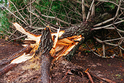
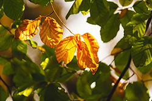
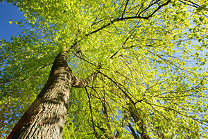

Advice from an Ocean County Tree Company
Living near the Jersey Shore comes with its share of coastal charm—sea breezes, salty air, and scenic views—but it also brings unique challenges for your trees. If you’ve noticed your trees looking a little worse for wear, the salt air might be to blame. As an experienced Ocean County tree company, we’ve helped countless homeowners and property managers protect their landscapes from the often-overlooked effects of living near the ocean. Trees in coastal environments are constantly exposed to salt spray, sandy soil, and strong winds, all of which can impact their health. Leaves may brown, growth may slow, and roots may struggle to thrive. Whether you’re planting new trees, caring for mature ones, or noticing signs of stress, understanding how the shoreline environment affects tree health is the first step. In this post, we’ll break down the causes, signs, and solutions to help your trees thrive.
Salt Air is Good for You But Bad for Trees

Salt air may feel refreshing, but for your trees, it’s a different story. Ocean breezes carry tiny salt particles that settle on leaves and needles. Over time, this salt buildup can dry out foliage, disrupt the tree’s ability to take in water, and lead to visible damage such as scorched or browning leaves, stunted growth, and early leaf drop. It’s not just the above-ground parts that suffer—salt can also accumulate in the soil, weakening the root system and reducing a tree’s ability to absorb vital nutrients. These issues tend to sneak up gradually, which is why many Ocean County property owners don’t realize there’s a problem until the damage is advanced.The good news? With the right tree species, you can reduce the risks significantly. As an Ocean County tree company familiar with coastal planting, we often recommend salt-tolerant species like Eastern red cedar, black locust, sassafras, bayberry, and pitch pine. These trees have evolved to withstand salt spray, wind, and poor soil conditions—making them ideal for shore-area landscaping. Choosing the right species from the start can save you money and effort down the line, while also ensuring your yard stays beautiful and resilient.
If your property already has established trees, there are several steps you can take to help them cope with salt exposure. Rinsing foliage with water after windy days can wash off salt residue, while proper mulching helps retain soil moisture and buffer roots from harsh conditions. Installing natural windbreaks, such as dense shrubs or fences, on the ocean-facing side of your yard can reduce salt exposure and wind damage. Deep watering is also important, as it helps flush salt from the soil and keeps root systems healthy.
Signs of a Stressed Tree

Of course, not all tree issues are easy to spot—especially when the damage is happening beneath the surface. You might not notice a problem until it’s too late. Some signs, like browning leaves or early leaf drop, may seem like normal seasonal changes, but they could be indicators of salt stress or root damage. Other warning signs include thinning canopies, brittle branches, and limbs that seem unusually prone to breaking. If you see bark peeling or cracking near the base, or notice mushrooms or fungal growth around the trunk, it could mean the root system is struggling due to soil salinity or rot.
Leaning trees are also a major red flag. In coastal areas where high winds are common, a tilted tree could indicate unstable roots or structural weakness. In these cases, ignoring the issue could lead to serious safety hazards, especially during storms.
That’s why it’s important to have a trained eye assess the situation. As an experienced Ocean County tree company, Ben Bivins Tree Experts is equipped to evaluate your trees for hidden structural issues, root health, and overall vitality. Our team can recommend the best course of action—whether it’s pruning to remove stress, cabling to reinforce limbs, or a full removal to prevent property damage. In many cases, early intervention can restore a struggling tree and help it recover before it declines further.
Contact Ben Bivins Tree Experts for the Best Ocean County Tree Company

The coastal environment in Ocean County is beautiful, but it demands a little extra care when it comes to your trees. From salt-laden winds to sandy soil conditions, the elements can quietly weaken even the healthiest trees if left unmanaged. But with the right knowledge—and the help of a trusted Ocean County tree company—you can protect your landscape and keep your trees looking their best year-round. Whether you need advice on planting salt-tolerant species, maintenance for existing trees, or professional help with trimming or removal, we’re here to help you navigate the unique challenges of coastal tree care. Don’t wait until damage becomes irreversible. A proactive approach today can save you time, money, and stress down the road. Contact Ben Bivins Tree Experts to schedule a tree health evaluation or speak with one of our experts. Your trees deserve the best protection Ocean County has to offer.